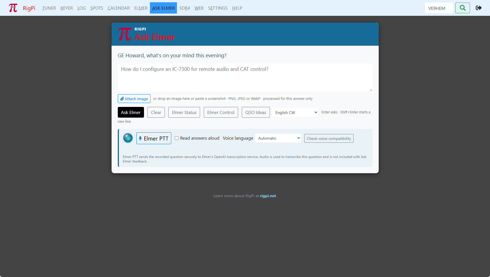

|
<< Click to Display Table of Contents >> Navigation: Views > Ask Elmer |

Ask Elmer is RigPi’s built-in help assistant for questions about RigPi and amateur radio. It can answer using Official RigPi Help, RigPi and Hamlib material, WSJT-X references, selected community resources, and approved live station data when available.
To use it:
1.Open the Ask Elmer panel in RigPi.
2.Type a plain-language question, such as “How do I configure CAT control?” or “What does this SDR display show?”
3.You can also ask about an image or screenshot in supported RigPi 5.0 installations.
4.For setup, sign in as an administrator and go to Settings > Accounts > User Settings.
5.Under RigPi Elmer Service, click Configure, name the station, and use the displayed code to connect it. A ChatGPT subscription, OpenAI account, or personal API key is not required. [3]
Ask Elmer is one of three related Elmer features: Ask Elmer answers questions, Elmer Voice handles speech and read-aloud/transcription features, and Elmer Control interprets commands from its compact control drawer.
Ask Elmer speaks 22 languages. You can mix languages, by asking for an answer in a different language. For example:
"What will the weather be like here tomorrow? Answer in Spanish."
Mañana, 14 de septiembre, estará nublado en tu ubicación de Ohio. Se espera una máxima de 20,5 °C y una mínima de 12,8 °C. La probabilidad de precipitación es baja, 4 %, con 0 mm previstos. [Live WX 1]
Habrá viento de hasta 18,4 km/h, pero las rachas podrían alcanzar 46,8 km/h. Si tienes antenas, mástiles u otro equipo exterior, revisa sus límites mecánicos y las sujeciones; un pronóstico meteorológico por sí solo no confirma que una instalación sea segura. [Live WX 1]
El amanecer será a las 07:07 y la puesta de sol a las 19:38, hora local de America/New_York. Es un pronóstico de modelo, no una alerta oficial: consulta también los avisos meteorológicos locales antes de operar o trabajar en antenas. [Live WX 1]
[Live WX 1] Open-Meteo — ubicación: OH (ubicación de la cuenta RigPi iniciada); obtenido: 2026-09-14T00:33:03+00:00; zona horaria: America/New_York; unidades: °C, km/h y mm. Weather data by Open-Meteo.com. https://open-meteo.com/